146 images
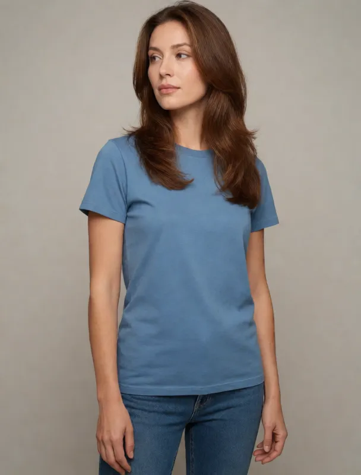
krea 2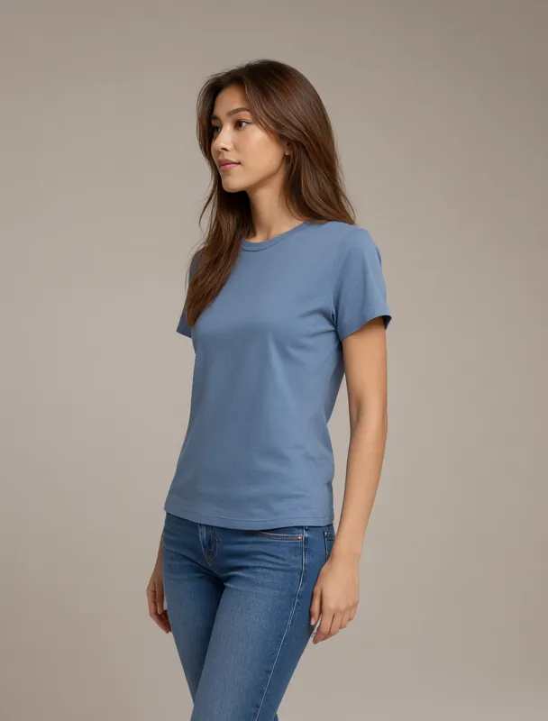
qwen image 2.1a full color fashion photograph in three-quarter view, a three-quarter length shot from the head to mid-thigh, lit by soft even studio light against a plain warm gray backdrop. the subject is a slim mixed race woman of about twenty five with light skin. her hair is chestnut brown, long blowout layers. she wears a plain dusty blue crew-neck t-shirt. she wears blue jeans. she stands relaxed, turned three quarters toward the left side of the frame, and gazes off to the left side of the frame, away from the camera.
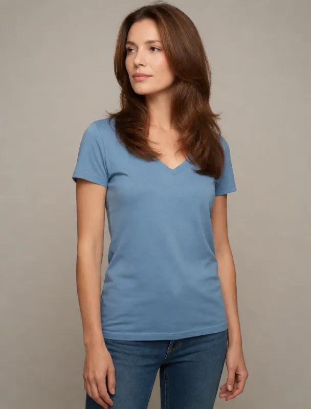
krea 2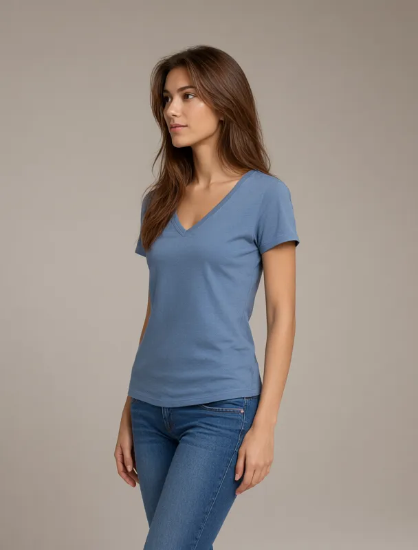
qwen image 2.1a full color fashion photograph in three-quarter view, a three-quarter length shot from the head to mid-thigh, lit by soft even studio light against a plain warm gray backdrop. the subject is a slim mixed race woman of about twenty five with light skin. her hair is chestnut brown, long blowout layers. she wears a plain dusty blue v-neck t-shirt. she wears blue jeans. she stands relaxed, turned three quarters toward the left side of the frame, and gazes off to the left side of the frame, away from the camera.
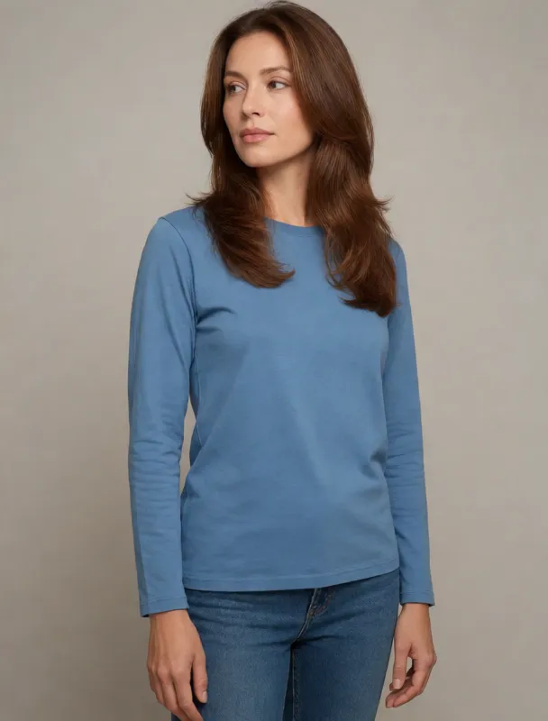
krea 2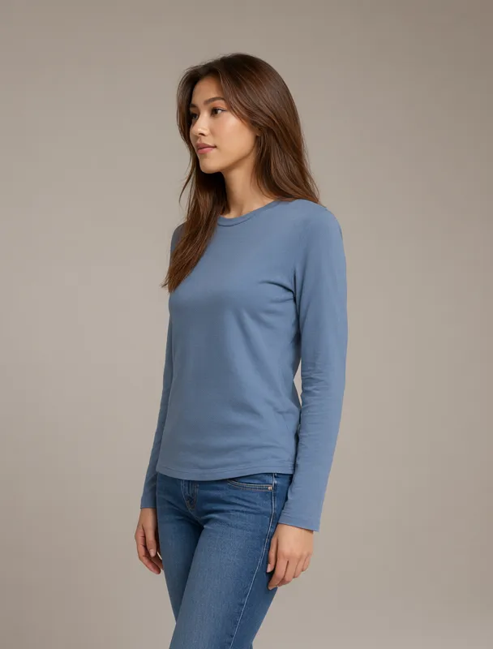
qwen image 2.1a full color fashion photograph in three-quarter view, a three-quarter length shot from the head to mid-thigh, lit by soft even studio light against a plain warm gray backdrop. the subject is a slim mixed race woman of about twenty five with light skin. her hair is chestnut brown, long blowout layers. she wears a plain dusty blue long-sleeve t-shirt. she wears blue jeans. she stands relaxed, turned three quarters toward the left side of the frame, and gazes off to the left side of the frame, away from the camera.
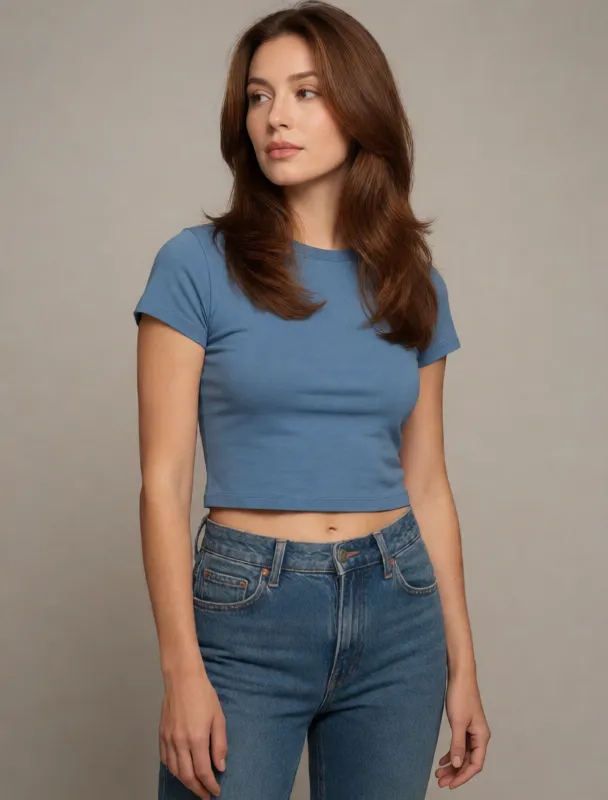
krea 2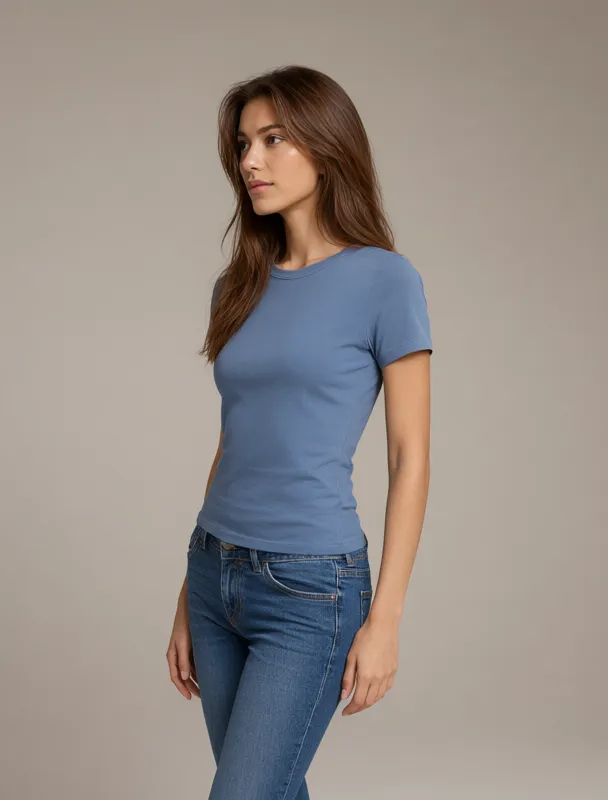
qwen image 2.1a full color fashion photograph in three-quarter view, a three-quarter length shot from the head to mid-thigh, lit by soft even studio light against a plain warm gray backdrop. the subject is a slim mixed race woman of about twenty five with light skin. her hair is chestnut brown, long blowout layers. she wears a plain dusty blue fitted cropped tee. she wears blue jeans. she stands relaxed, turned three quarters toward the left side of the frame, and gazes off to the left side of the frame, away from the camera.
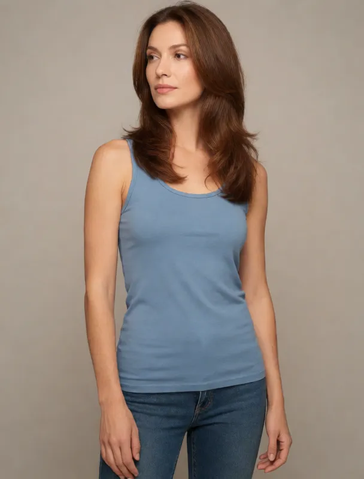
krea 2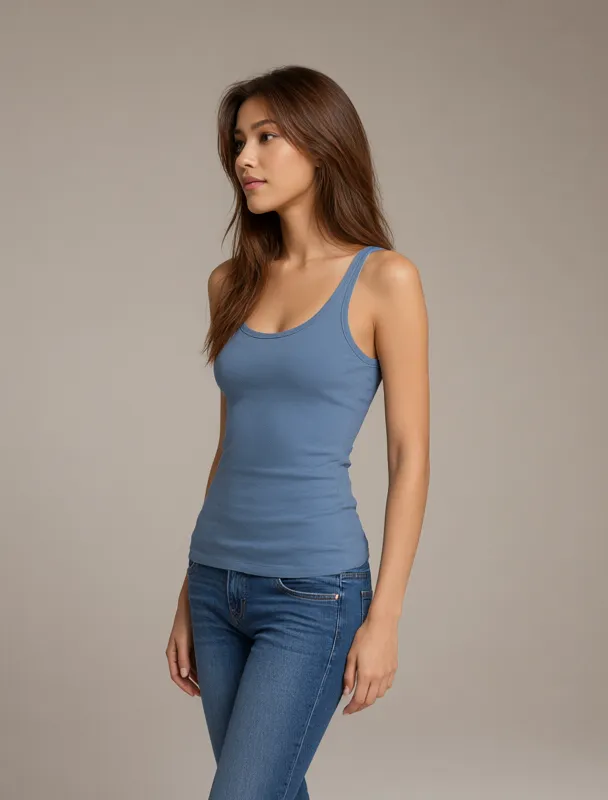
qwen image 2.1a full color fashion photograph in three-quarter view, a three-quarter length shot from the head to mid-thigh, lit by soft even studio light against a plain warm gray backdrop. the subject is a slim mixed race woman of about twenty five with light skin. her hair is chestnut brown, long blowout layers. she wears a plain dusty blue tank top. she wears blue jeans. she stands relaxed, turned three quarters toward the left side of the frame, and gazes off to the left side of the frame, away from the camera.
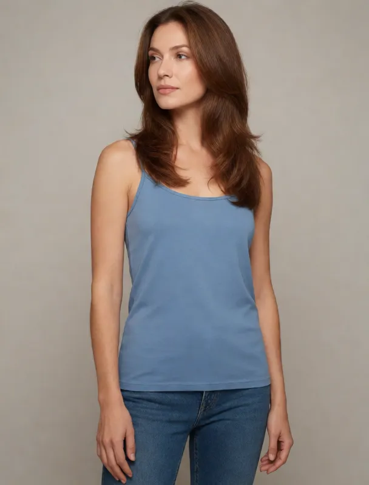
krea 2a full color fashion photograph in three-quarter view, a three-quarter length shot from the head to mid-thigh, lit by soft even studio light against a plain warm gray backdrop. the subject is a slim mixed race woman of about twenty five with light skin. her hair is chestnut brown, long blowout layers. she wears a plain dusty blue camisole. she wears blue jeans. she stands relaxed, turned three quarters toward the left side of the frame, and gazes off to the left side of the frame, away from the camera.
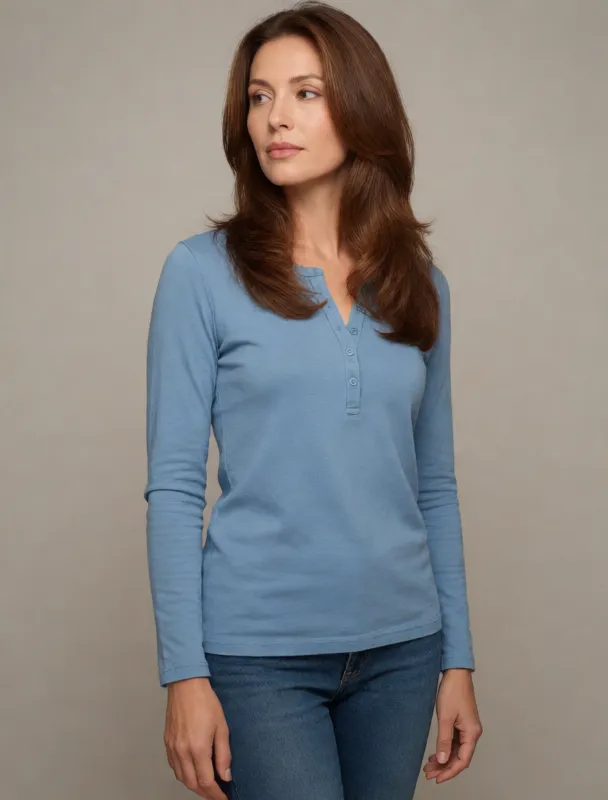
krea 2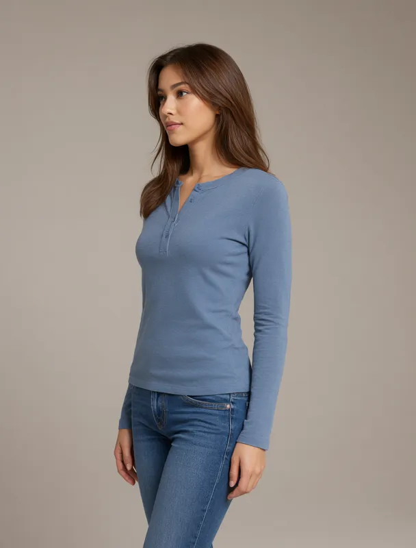
qwen image 2.1a full color fashion photograph in three-quarter view, a three-quarter length shot from the head to mid-thigh, lit by soft even studio light against a plain warm gray backdrop. the subject is a slim mixed race woman of about twenty five with light skin. her hair is chestnut brown, long blowout layers. she wears a plain dusty blue henley. she wears blue jeans. she stands relaxed, turned three quarters toward the left side of the frame, and gazes off to the left side of the frame, away from the camera.
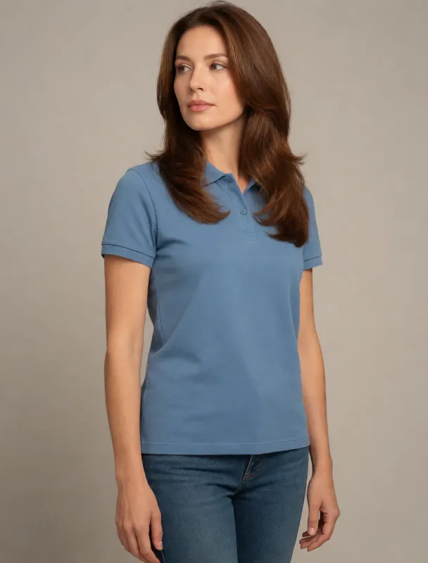
krea 2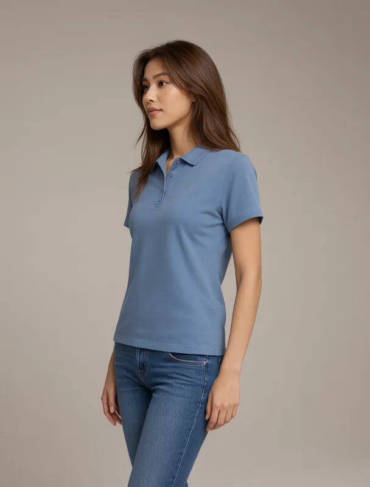
qwen image 2.1a full color fashion photograph in three-quarter view, a three-quarter length shot from the head to mid-thigh, lit by soft even studio light against a plain warm gray backdrop. the subject is a slim mixed race woman of about twenty five with light skin. her hair is chestnut brown, long blowout layers. she wears a plain dusty blue polo shirt. she wears blue jeans. she stands relaxed, turned three quarters toward the left side of the frame, and gazes off to the left side of the frame, away from the camera.
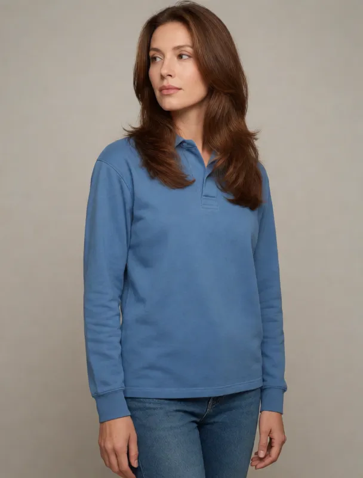
krea 2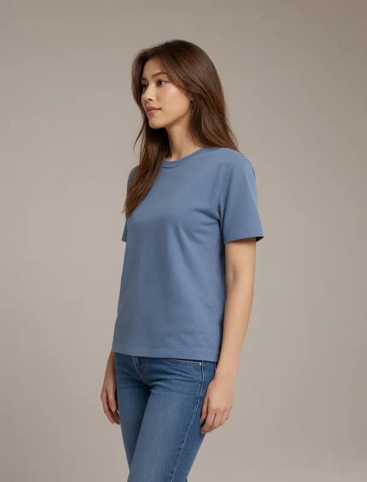
qwen image 2.1a full color fashion photograph in three-quarter view, a three-quarter length shot from the head to mid-thigh, lit by soft even studio light against a plain warm gray backdrop. the subject is a slim mixed race woman of about twenty five with light skin. her hair is chestnut brown, long blowout layers. she wears a plain dusty blue rugby shirt. she wears blue jeans. she stands relaxed, turned three quarters toward the left side of the frame, and gazes off to the left side of the frame, away from the camera.
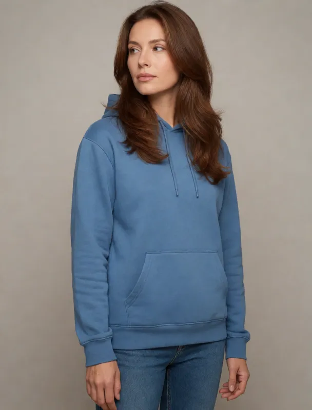
krea 2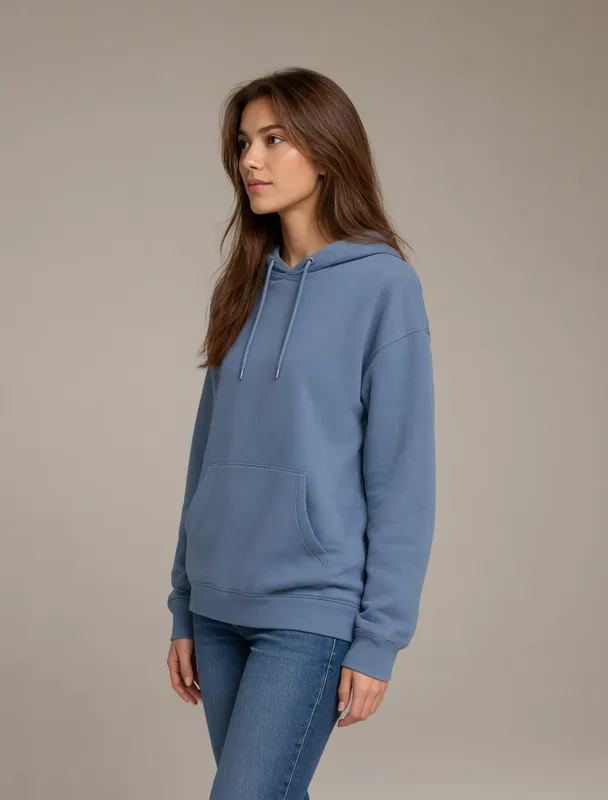
qwen image 2.1a full color fashion photograph in three-quarter view, a three-quarter length shot from the head to mid-thigh, lit by soft even studio light against a plain warm gray backdrop. the subject is a slim mixed race woman of about twenty five with light skin. her hair is chestnut brown, long blowout layers. she wears a plain dusty blue hoodie. she wears blue jeans. she stands relaxed, turned three quarters toward the left side of the frame, and gazes off to the left side of the frame, away from the camera.
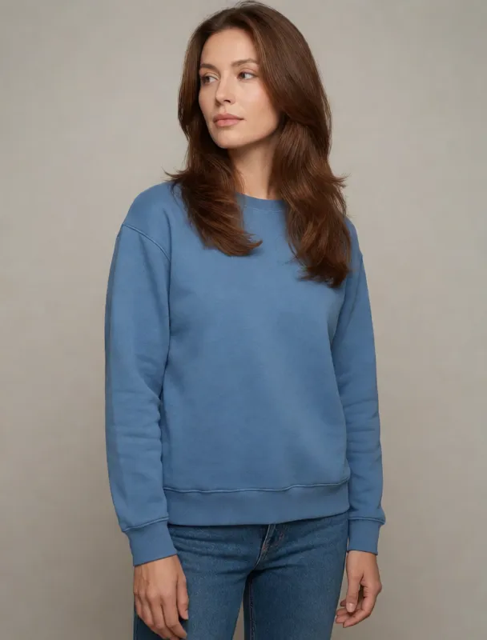
krea 2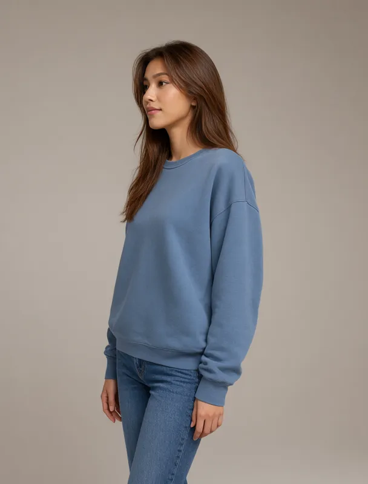
qwen image 2.1a full color fashion photograph in three-quarter view, a three-quarter length shot from the head to mid-thigh, lit by soft even studio light against a plain warm gray backdrop. the subject is a slim mixed race woman of about twenty five with light skin. her hair is chestnut brown, long blowout layers. she wears a plain dusty blue sweatshirt. she wears blue jeans. she stands relaxed, turned three quarters toward the left side of the frame, and gazes off to the left side of the frame, away from the camera.
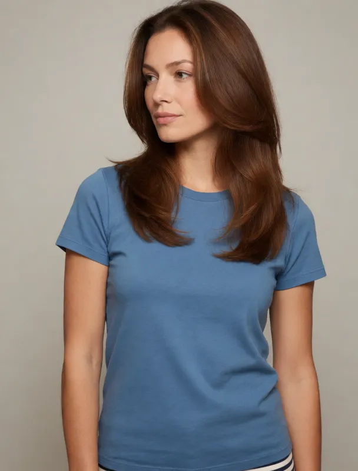
krea 2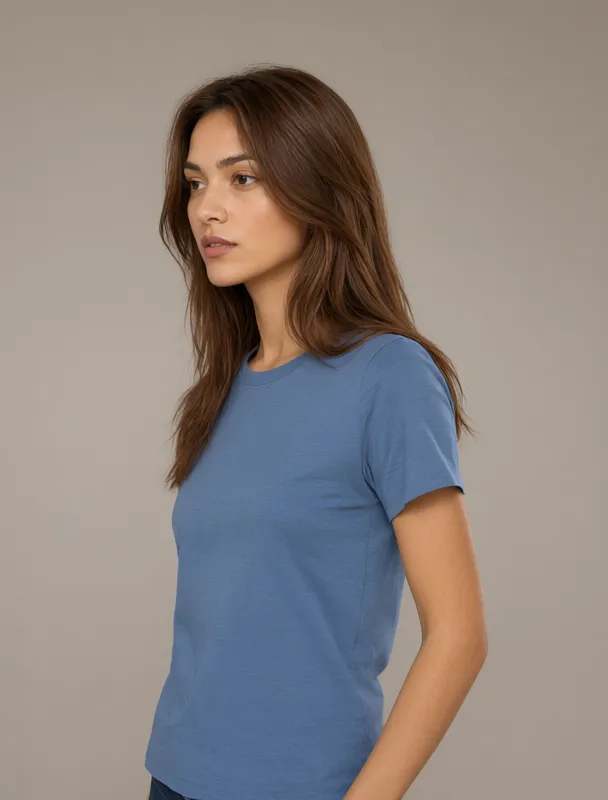
qwen image 2.1a full color fashion photograph in three-quarter view, a three-quarter length shot from the head to mid-thigh, lit by soft even studio light against a plain warm gray backdrop. the subject is a slim mixed race woman of about twenty five with light skin. her hair is chestnut brown, long blowout layers. she wears a plain dusty blue crew-neck t-shirt. she wears a marinière striped top. she stands relaxed, turned three quarters toward the left side of the frame, and gazes off to the left side of the frame, away from the camera.
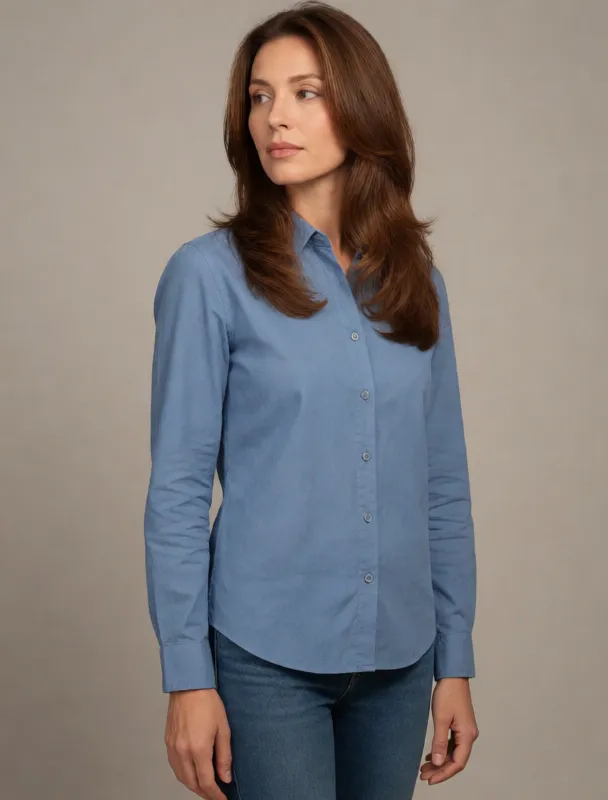
krea 2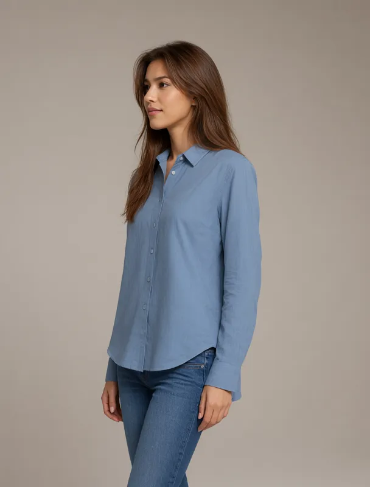
qwen image 2.1a full color fashion photograph in three-quarter view, a three-quarter length shot from the head to mid-thigh, lit by soft even studio light against a plain warm gray backdrop. the subject is a slim mixed race woman of about twenty five with light skin. her hair is chestnut brown, long blowout layers. she wears a plain dusty blue button-down shirt. she wears blue jeans. she stands relaxed, turned three quarters toward the left side of the frame, and gazes off to the left side of the frame, away from the camera.
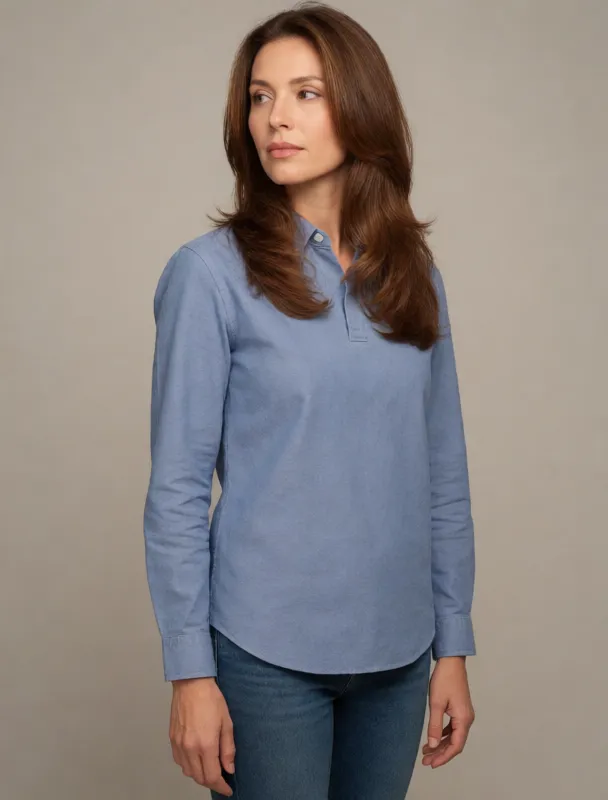
krea 2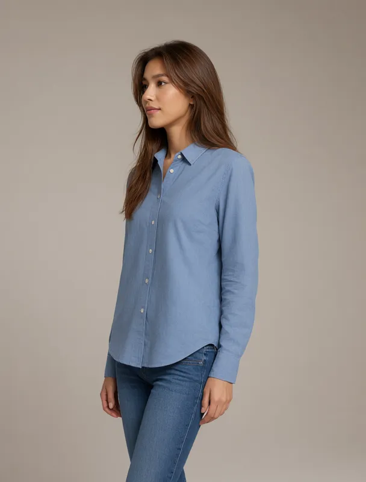
qwen image 2.1a full color fashion photograph in three-quarter view, a three-quarter length shot from the head to mid-thigh, lit by soft even studio light against a plain warm gray backdrop. the subject is a slim mixed race woman of about twenty five with light skin. her hair is chestnut brown, long blowout layers. she wears a plain dusty blue oxford shirt. she wears blue jeans. she stands relaxed, turned three quarters toward the left side of the frame, and gazes off to the left side of the frame, away from the camera.
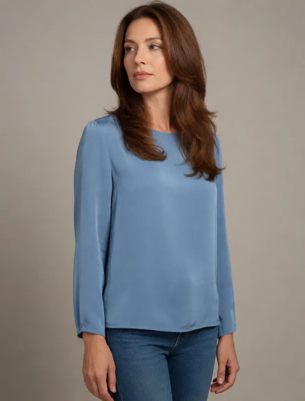
krea 2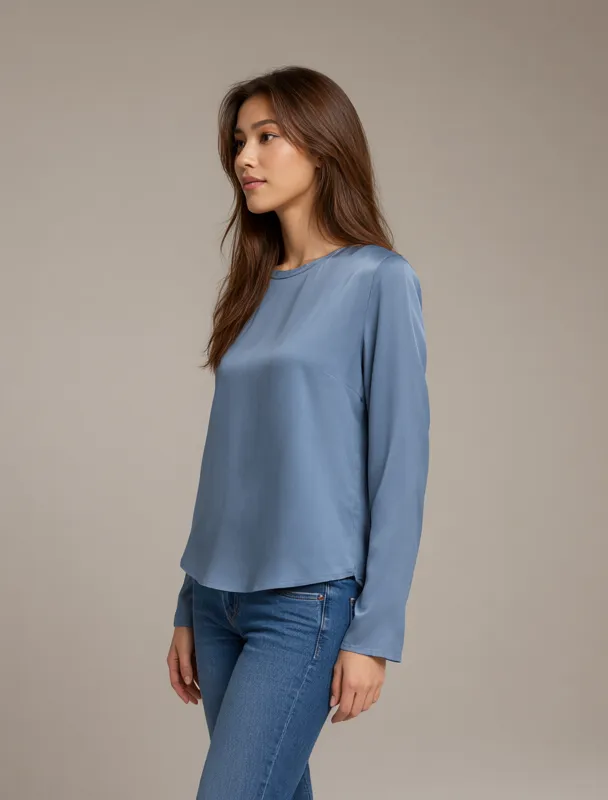
qwen image 2.1a full color fashion photograph in three-quarter view, a three-quarter length shot from the head to mid-thigh, lit by soft even studio light against a plain warm gray backdrop. the subject is a slim mixed race woman of about twenty five with light skin. her hair is chestnut brown, long blowout layers. she wears a plain dusty blue silk blouse. she wears blue jeans. she stands relaxed, turned three quarters toward the left side of the frame, and gazes off to the left side of the frame, away from the camera.
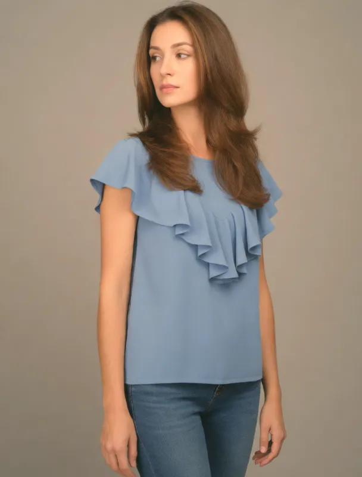
krea 2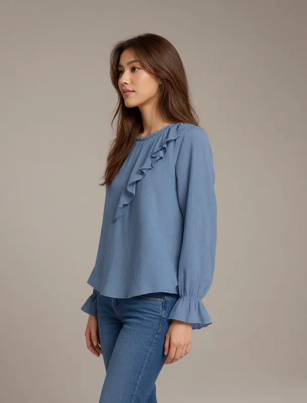
qwen image 2.1a full color fashion photograph in three-quarter view, a three-quarter length shot from the head to mid-thigh, lit by soft even studio light against a plain warm gray backdrop. the subject is a slim mixed race woman of about twenty five with light skin. her hair is chestnut brown, long blowout layers. she wears a plain dusty blue ruffled blouse. she wears blue jeans. she stands relaxed, turned three quarters toward the left side of the frame, and gazes off to the left side of the frame, away from the camera.
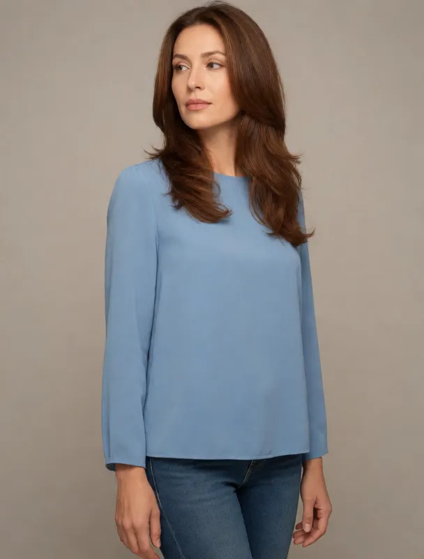
krea 2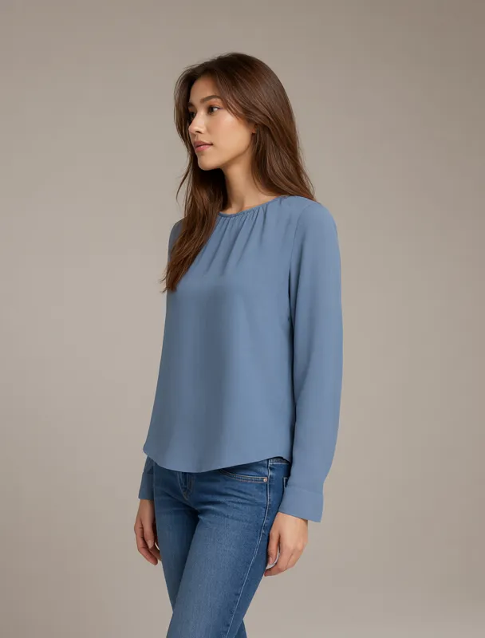
qwen image 2.1a full color fashion photograph in three-quarter view, a three-quarter length shot from the head to mid-thigh, lit by soft even studio light against a plain warm gray backdrop. the subject is a slim mixed race woman of about twenty five with light skin. her hair is chestnut brown, long blowout layers. she wears a plain dusty blue bow blouse. she wears blue jeans. she stands relaxed, turned three quarters toward the left side of the frame, and gazes off to the left side of the frame, away from the camera.
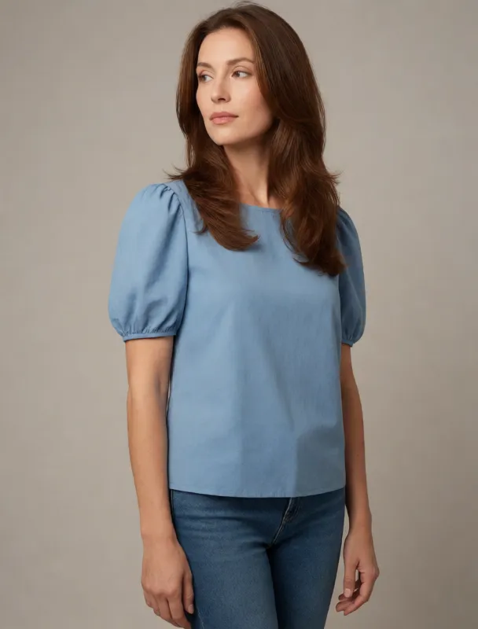
krea 2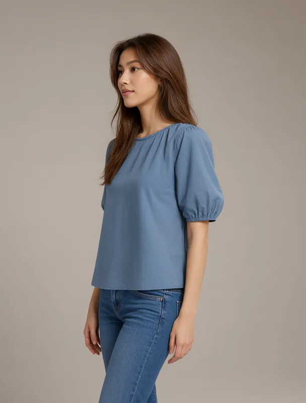
qwen image 2.1a full color fashion photograph in three-quarter view, a three-quarter length shot from the head to mid-thigh, lit by soft even studio light against a plain warm gray backdrop. the subject is a slim mixed race woman of about twenty five with light skin. her hair is chestnut brown, long blowout layers. she wears a plain dusty blue puff-sleeve blouse. she wears blue jeans. she stands relaxed, turned three quarters toward the left side of the frame, and gazes off to the left side of the frame, away from the camera.
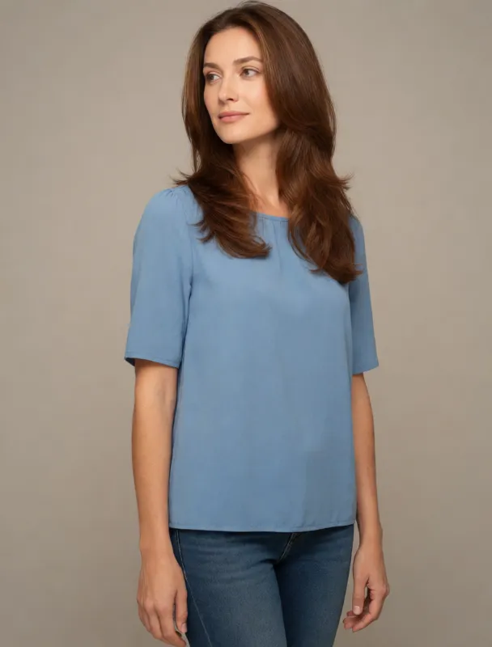
krea 2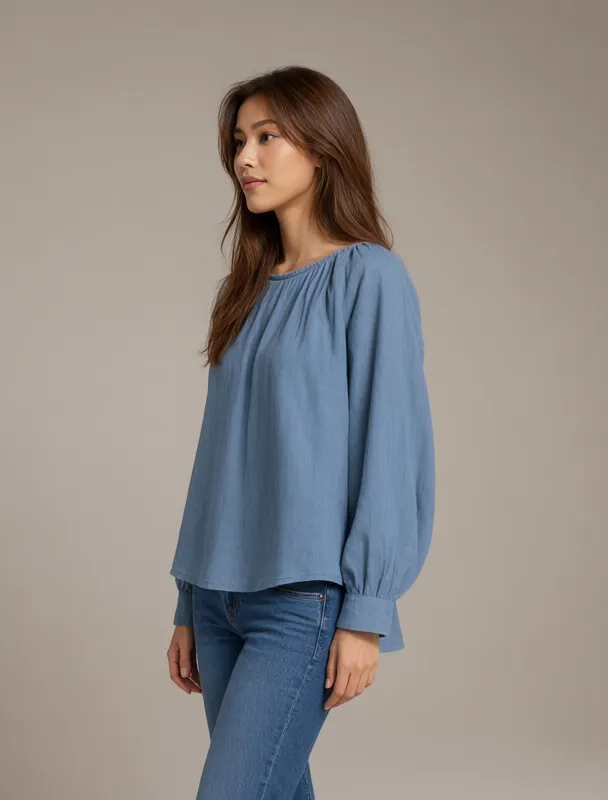
qwen image 2.1a full color fashion photograph in three-quarter view, a three-quarter length shot from the head to mid-thigh, lit by soft even studio light against a plain warm gray backdrop. the subject is a slim mixed race woman of about twenty five with light skin. her hair is chestnut brown, long blowout layers. she wears a plain dusty blue peasant blouse. she wears blue jeans. she stands relaxed, turned three quarters toward the left side of the frame, and gazes off to the left side of the frame, away from the camera.
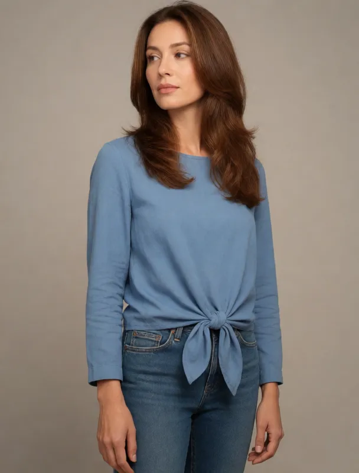
krea 2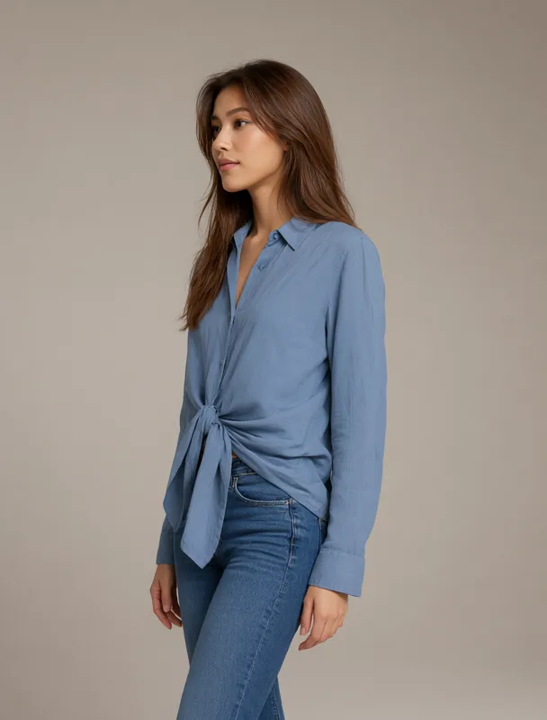
qwen image 2.1a full color fashion photograph in three-quarter view, a three-quarter length shot from the head to mid-thigh, lit by soft even studio light against a plain warm gray backdrop. the subject is a slim mixed race woman of about twenty five with light skin. her hair is chestnut brown, long blowout layers. she wears a plain dusty blue tie-front shirt. she wears blue jeans. she stands relaxed, turned three quarters toward the left side of the frame, and gazes off to the left side of the frame, away from the camera.
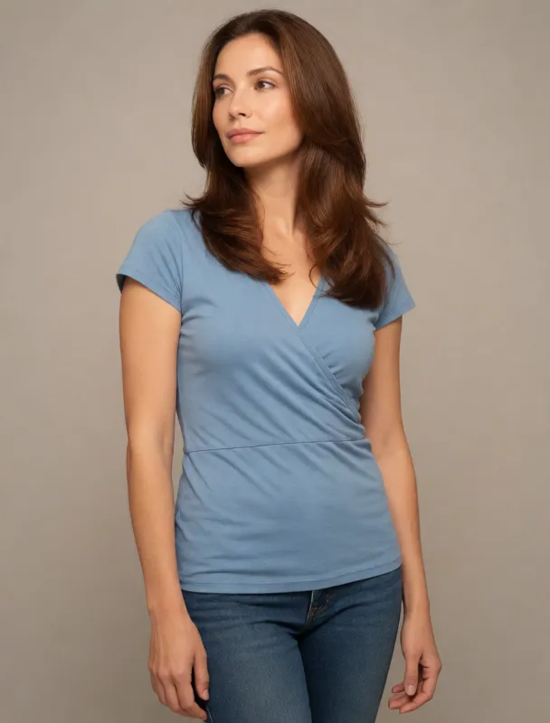
krea 2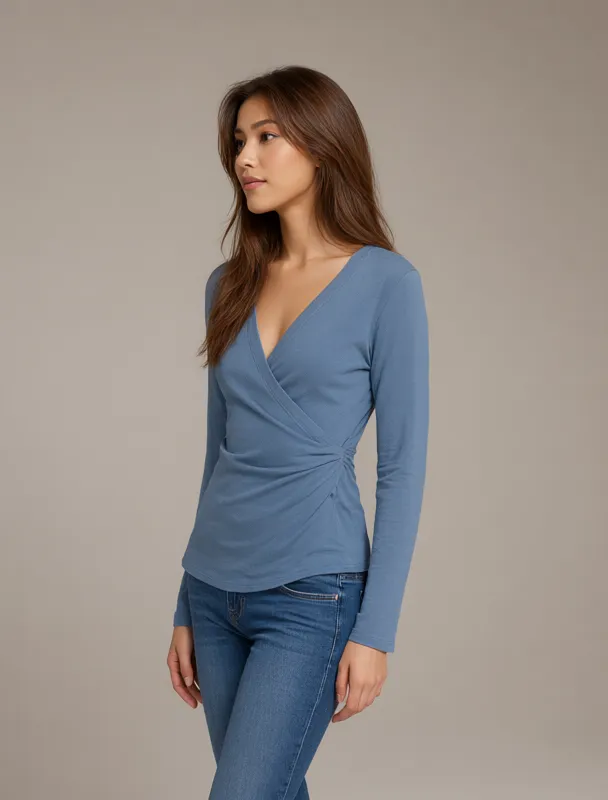
qwen image 2.1a full color fashion photograph in three-quarter view, a three-quarter length shot from the head to mid-thigh, lit by soft even studio light against a plain warm gray backdrop. the subject is a slim mixed race woman of about twenty five with light skin. her hair is chestnut brown, long blowout layers. she wears a plain dusty blue wrap top. she wears blue jeans. she stands relaxed, turned three quarters toward the left side of the frame, and gazes off to the left side of the frame, away from the camera.
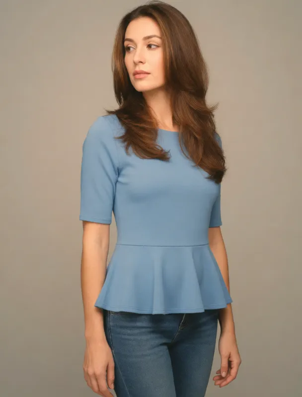
krea 2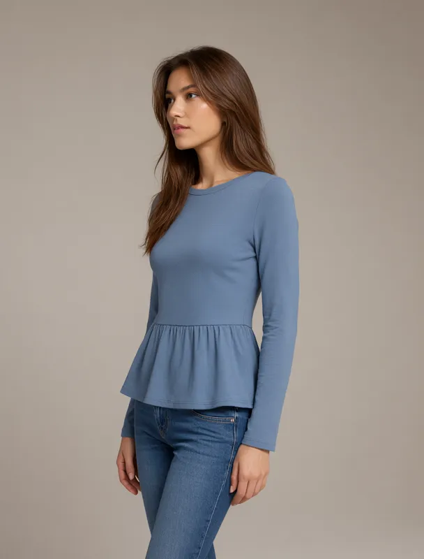
qwen image 2.1a full color fashion photograph in three-quarter view, a three-quarter length shot from the head to mid-thigh, lit by soft even studio light against a plain warm gray backdrop. the subject is a slim mixed race woman of about twenty five with light skin. her hair is chestnut brown, long blowout layers. she wears a plain dusty blue peplum top. she wears blue jeans. she stands relaxed, turned three quarters toward the left side of the frame, and gazes off to the left side of the frame, away from the camera.
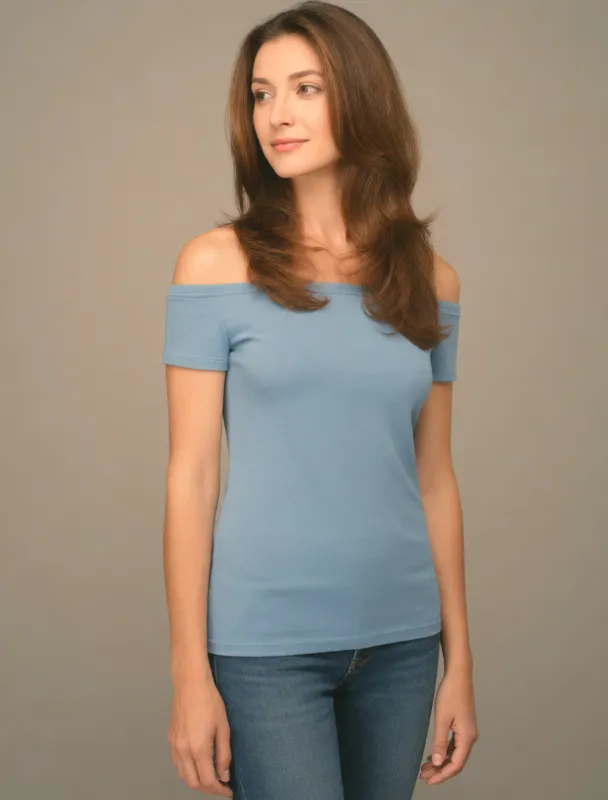
krea 2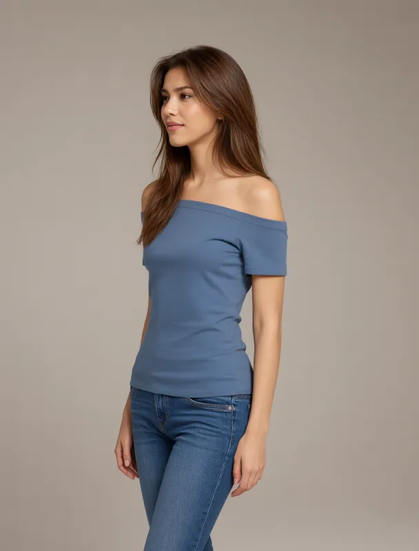
qwen image 2.1a full color fashion photograph in three-quarter view, a three-quarter length shot from the head to mid-thigh, lit by soft even studio light against a plain warm gray backdrop. the subject is a slim mixed race woman of about twenty five with light skin. her hair is chestnut brown, long blowout layers. she wears a plain dusty blue off-shoulder top. she wears blue jeans. she stands relaxed, turned three quarters toward the left side of the frame, and gazes off to the left side of the frame, away from the camera.
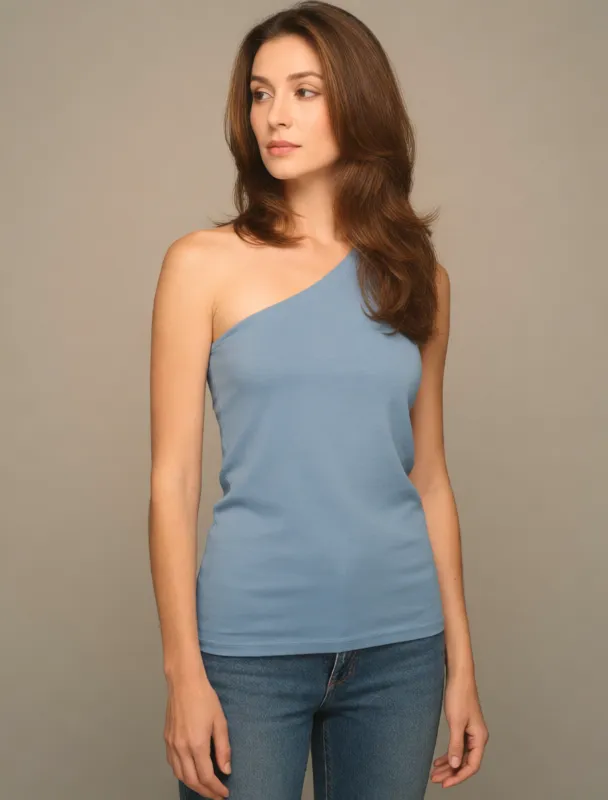
krea 2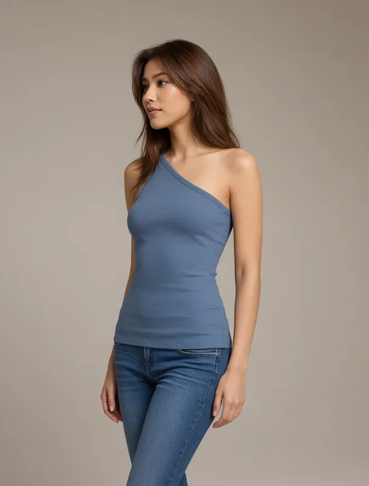
qwen image 2.1a full color fashion photograph in three-quarter view, a three-quarter length shot from the head to mid-thigh, lit by soft even studio light against a plain warm gray backdrop. the subject is a slim mixed race woman of about twenty five with light skin. her hair is chestnut brown, long blowout layers. she wears a plain dusty blue one-shoulder top. she wears blue jeans. she stands relaxed, turned three quarters toward the left side of the frame, and gazes off to the left side of the frame, away from the camera.
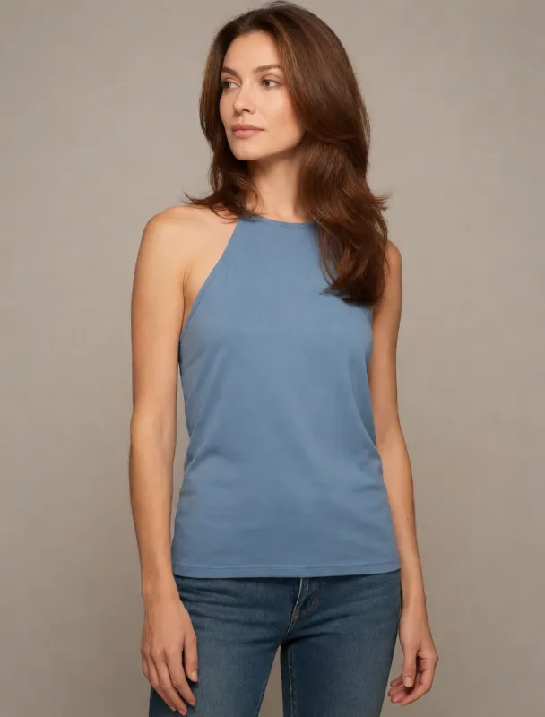
krea 2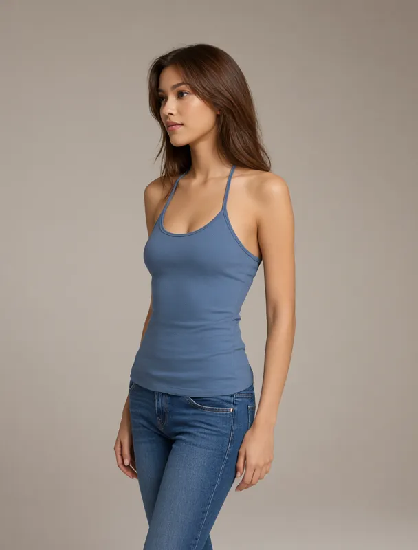
qwen image 2.1a full color fashion photograph in three-quarter view, a three-quarter length shot from the head to mid-thigh, lit by soft even studio light against a plain warm gray backdrop. the subject is a slim mixed race woman of about twenty five with light skin. her hair is chestnut brown, long blowout layers. she wears a plain dusty blue halter top. she wears blue jeans. she stands relaxed, turned three quarters toward the left side of the frame, and gazes off to the left side of the frame, away from the camera.
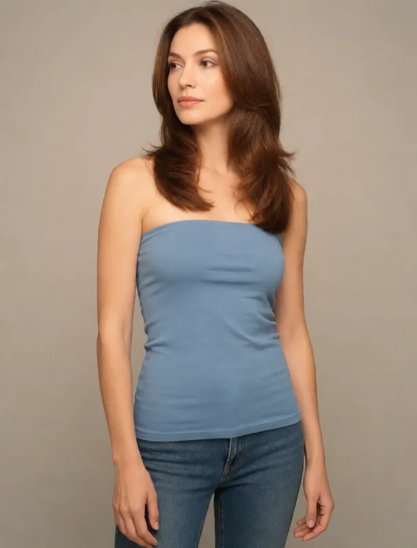
krea 2a full color fashion photograph in three-quarter view, a three-quarter length shot from the head to mid-thigh, lit by soft even studio light against a plain warm gray backdrop. the subject is a slim mixed race woman of about twenty five with light skin. her hair is chestnut brown, long blowout layers. she wears a plain dusty blue tube top. she wears blue jeans. she stands relaxed, turned three quarters toward the left side of the frame, and gazes off to the left side of the frame, away from the camera.
a full color fashion photograph in three-quarter view, a three-quarter length shot from the head to mid-thigh, lit by soft even studio light against a plain warm gray backdrop. the subject is a slim mixed race woman of about twenty five with light skin. her hair is chestnut brown, long blowout layers. she wears a plain dusty blue bustier top. she wears blue jeans. she stands relaxed, turned three quarters toward the left side of the frame, and gazes off to the left side of the frame, away from the camera.
a full color fashion photograph in three-quarter view, a three-quarter length shot from the head to mid-thigh, lit by soft even studio light against a plain warm gray backdrop. the subject is a slim mixed race woman of about twenty five with light skin. her hair is chestnut brown, long blowout layers. she wears a plain dusty blue corset top. she wears blue jeans. she stands relaxed, turned three quarters toward the left side of the frame, and gazes off to the left side of the frame, away from the camera.
a full color fashion photograph in three-quarter view, a three-quarter length shot from the head to mid-thigh, lit by soft even studio light against a plain warm gray backdrop. the subject is a slim mixed race woman of about twenty five with light skin. her hair is chestnut brown, long blowout layers. she wears a plain dusty blue bodysuit. she wears blue jeans. she stands relaxed, turned three quarters toward the left side of the frame, and gazes off to the left side of the frame, away from the camera.
a full color fashion photograph in three-quarter view, a three-quarter length shot from the head to mid-thigh, lit by soft even studio light against a plain warm gray backdrop. the subject is a slim mixed race woman of about twenty five with light skin. her hair is chestnut brown, long blowout layers. she wears a plain dusty blue button-down shirt. she wears a vyshyvanka embroidered blouse. she stands relaxed, turned three quarters toward the left side of the frame, and gazes off to the left side of the frame, away from the camera.
a full color fashion photograph in three-quarter view, a three-quarter length shot from the head to mid-thigh, lit by soft even studio light against a plain warm gray backdrop. the subject is a slim mixed race woman of about twenty five with light skin. her hair is chestnut brown, long blowout layers. she wears a plain dusty blue button-down shirt. she wears a romanian ie blouse. she stands relaxed, turned three quarters toward the left side of the frame, and gazes off to the left side of the frame, away from the camera.
a full color fashion photograph in three-quarter view, a three-quarter length shot from the head to mid-thigh, lit by soft even studio light against a plain warm gray backdrop. the subject is a slim mixed race woman of about twenty five with light skin. her hair is chestnut brown, long blowout layers. she wears a plain dusty blue turtleneck. she wears blue jeans. she stands relaxed, turned three quarters toward the left side of the frame, and gazes off to the left side of the frame, away from the camera.
a full color fashion photograph in three-quarter view, a three-quarter length shot from the head to mid-thigh, lit by soft even studio light against a plain warm gray backdrop. the subject is a slim mixed race woman of about twenty five with light skin. her hair is chestnut brown, long blowout layers. she wears a plain dusty blue mock neck top. she wears blue jeans. she stands relaxed, turned three quarters toward the left side of the frame, and gazes off to the left side of the frame, away from the camera.
a full color fashion photograph in three-quarter view, a three-quarter length shot from the head to mid-thigh, lit by soft even studio light against a plain warm gray backdrop. the subject is a slim mixed race woman of about twenty five with light skin. her hair is chestnut brown, long blowout layers. she wears a plain dusty blue crew-neck sweater. she wears blue jeans. she stands relaxed, turned three quarters toward the left side of the frame, and gazes off to the left side of the frame, away from the camera.
a full color fashion photograph in three-quarter view, a three-quarter length shot from the head to mid-thigh, lit by soft even studio light against a plain warm gray backdrop. the subject is a slim mixed race woman of about twenty five with light skin. her hair is chestnut brown, long blowout layers. she wears a plain dusty blue v-neck sweater. she wears blue jeans. she stands relaxed, turned three quarters toward the left side of the frame, and gazes off to the left side of the frame, away from the camera.
a full color fashion photograph in three-quarter view, a three-quarter length shot from the head to mid-thigh, lit by soft even studio light against a plain warm gray backdrop. the subject is a slim mixed race woman of about twenty five with light skin. her hair is chestnut brown, long blowout layers. she wears a plain dusty blue cable-knit sweater. she wears blue jeans. she stands relaxed, turned three quarters toward the left side of the frame, and gazes off to the left side of the frame, away from the camera.
a full color fashion photograph in three-quarter view, a three-quarter length shot from the head to mid-thigh, lit by soft even studio light against a plain warm gray backdrop. the subject is a slim mixed race woman of about twenty five with light skin. her hair is chestnut brown, long blowout layers. she wears a plain dusty blue sweater vest. she wears blue jeans. she stands relaxed, turned three quarters toward the left side of the frame, and gazes off to the left side of the frame, away from the camera.
a full color fashion photograph in three-quarter view, a three-quarter length shot from the head to mid-thigh, lit by soft even studio light against a plain warm gray backdrop. the subject is a slim mixed race woman of about twenty five with light skin. her hair is chestnut brown, long blowout layers. she wears a plain dusty blue knit polo. she wears blue jeans. she stands relaxed, turned three quarters toward the left side of the frame, and gazes off to the left side of the frame, away from the camera.
a full color fashion photograph in three-quarter view, a three-quarter length shot from the head to mid-thigh, lit by soft even studio light against a plain warm gray backdrop. the subject is a slim mixed race woman of about twenty five with light skin. her hair is chestnut brown, long blowout layers. she wears a plain dusty blue cardigan. she wears blue jeans. she stands relaxed, turned three quarters toward the left side of the frame, and gazes off to the left side of the frame, away from the camera.
a full color fashion photograph in three-quarter view, a three-quarter length shot from the head to mid-thigh, lit by soft even studio light against a plain warm gray backdrop. the subject is a slim mixed race woman of about twenty five with light skin. her hair is chestnut brown, long blowout layers. she wears a plain dusty blue cropped cardigan. she wears blue jeans. she stands relaxed, turned three quarters toward the left side of the frame, and gazes off to the left side of the frame, away from the camera.
a full color fashion photograph in three-quarter view, a three-quarter length shot from the head to mid-thigh, lit by soft even studio light against a plain warm gray backdrop. the subject is a slim mixed race woman of about twenty five with light skin. her hair is chestnut brown, long blowout layers. she wears a plain dusty blue shrug. she wears blue jeans. she stands relaxed, turned three quarters toward the left side of the frame, and gazes off to the left side of the frame, away from the camera.
a full color fashion photograph in three-quarter view, a three-quarter length shot from the head to mid-thigh, lit by soft even studio light against a plain warm gray backdrop. the subject is a slim mixed race woman of about twenty five with light skin. her hair is chestnut brown, long blowout layers. she wears a plain dusty blue turtleneck. she wears a lopapeysa yoke sweater. she stands relaxed, turned three quarters toward the left side of the frame, and gazes off to the left side of the frame, away from the camera.
a full color fashion photograph in three-quarter view, a three-quarter length shot from the head to mid-thigh, lit by soft even studio light against a plain warm gray backdrop. the subject is a slim mixed race woman of about twenty five with light skin. her hair is chestnut brown, long blowout layers. she wears a plain dusty blue turtleneck. she wears an aran cable-knit sweater. she stands relaxed, turned three quarters toward the left side of the frame, and gazes off to the left side of the frame, away from the camera.
a full color fashion photograph in three-quarter view, a three-quarter length shot from the head to mid-thigh, lit by soft even studio light against a plain warm gray backdrop. the subject is a slim mixed race woman of about twenty five with light skin. her hair is chestnut brown, long blowout layers. she wears a plain dusty blue blazer over a white t-shirt. she wears blue jeans. she stands relaxed, turned three quarters toward the left side of the frame, and gazes off to the left side of the frame, away from the camera.
a full color fashion photograph in three-quarter view, a three-quarter length shot from the head to mid-thigh, lit by soft even studio light against a plain warm gray backdrop. the subject is a slim mixed race woman of about twenty five with light skin. her hair is chestnut brown, long blowout layers. she wears a plain dusty blue denim jacket over a white t-shirt. she wears blue jeans. she stands relaxed, turned three quarters toward the left side of the frame, and gazes off to the left side of the frame, away from the camera.
a full color fashion photograph in three-quarter view, a three-quarter length shot from the head to mid-thigh, lit by soft even studio light against a plain warm gray backdrop. the subject is a slim mixed race woman of about twenty five with light skin. her hair is chestnut brown, long blowout layers. she wears a plain dusty blue leather moto jacket over a white t-shirt. she wears blue jeans. she stands relaxed, turned three quarters toward the left side of the frame, and gazes off to the left side of the frame, away from the camera.
a full color fashion photograph in three-quarter view, a three-quarter length shot from the head to mid-thigh, lit by soft even studio light against a plain warm gray backdrop. the subject is a slim mixed race woman of about twenty five with light skin. her hair is chestnut brown, long blowout layers. she wears a plain dusty blue bomber jacket over a white t-shirt. she wears blue jeans. she stands relaxed, turned three quarters toward the left side of the frame, and gazes off to the left side of the frame, away from the camera.
a full color fashion photograph in three-quarter view, a three-quarter length shot from the head to mid-thigh, lit by soft even studio light against a plain warm gray backdrop. the subject is a slim mixed race woman of about twenty five with light skin. her hair is chestnut brown, long blowout layers. she wears a plain dusty blue puffer jacket over a white t-shirt. she wears blue jeans. she stands relaxed, turned three quarters toward the left side of the frame, and gazes off to the left side of the frame, away from the camera.
a full color fashion photograph in three-quarter view, a three-quarter length shot from the head to mid-thigh, lit by soft even studio light against a plain warm gray backdrop. the subject is a slim mixed race woman of about twenty five with light skin. her hair is chestnut brown, long blowout layers. she wears a plain dusty blue trench coat over a white t-shirt. she wears blue jeans. she stands relaxed, turned three quarters toward the left side of the frame, and gazes off to the left side of the frame, away from the camera.
a full color fashion photograph in three-quarter view, a three-quarter length shot from the head to mid-thigh, lit by soft even studio light against a plain warm gray backdrop. the subject is a slim mixed race woman of about twenty five with light skin. her hair is chestnut brown, long blowout layers. she wears a plain dusty blue peacoat over a white t-shirt. she wears blue jeans. she stands relaxed, turned three quarters toward the left side of the frame, and gazes off to the left side of the frame, away from the camera.
a full color fashion photograph in three-quarter view, a three-quarter length shot from the head to mid-thigh, lit by soft even studio light against a plain warm gray backdrop. the subject is a slim mixed race woman of about twenty five with light skin. her hair is chestnut brown, long blowout layers. she wears a plain dusty blue windbreaker over a white t-shirt. she wears blue jeans. she stands relaxed, turned three quarters toward the left side of the frame, and gazes off to the left side of the frame, away from the camera.
a full color fashion photograph in three-quarter view, a three-quarter length shot from the head to mid-thigh, lit by soft even studio light against a plain warm gray backdrop. the subject is a slim mixed race woman of about twenty five with light skin. her hair is chestnut brown, long blowout layers. she wears a plain dusty blue kimono cardigan over a white t-shirt. she wears blue jeans. she stands relaxed, turned three quarters toward the left side of the frame, and gazes off to the left side of the frame, away from the camera.
a full color fashion photograph in three-quarter view, a three-quarter length shot from the head to mid-thigh, lit by soft even studio light against a plain warm gray backdrop. the subject is a slim mixed race woman of about twenty five with light skin. her hair is chestnut brown, long blowout layers. she wears a plain dusty blue quilted vest over a white t-shirt. she wears blue jeans. she stands relaxed, turned three quarters toward the left side of the frame, and gazes off to the left side of the frame, away from the camera.
a full color full length fashion photograph in three-quarter view, with the whole body in frame from head to feet, lit by soft even studio light against a plain warm gray backdrop. the subject is a slim mixed race woman of about twenty five with light skin. her hair is chestnut brown, long blowout layers. she wears a wool overcoat over a white t-shirt and blue jeans. she stands relaxed, turned three quarters toward the left side of the frame, and gazes off to the left side of the frame, away from the camera.
a full color full length fashion photograph in three-quarter view, with the whole body in frame from head to feet, lit by soft even studio light against a plain warm gray backdrop. the subject is a slim mixed race woman of about twenty five with light skin. her hair is chestnut brown, long blowout layers. she wears a parka over a white t-shirt and blue jeans. she stands relaxed, turned three quarters toward the left side of the frame, and gazes off to the left side of the frame, away from the camera.
a full color full length fashion photograph in three-quarter view, with the whole body in frame from head to feet, lit by soft even studio light against a plain warm gray backdrop. the subject is a slim mixed race woman of about twenty five with light skin. her hair is chestnut brown, long blowout layers. she wears a cape coat over a white t-shirt and blue jeans. she stands relaxed, turned three quarters toward the left side of the frame, and gazes off to the left side of the frame, away from the camera.
a full color full length fashion photograph in three-quarter view, with the whole body in frame from head to feet, lit by soft even studio light against a plain warm gray backdrop. the subject is a slim mixed race woman of about twenty five with light skin. her hair is chestnut brown, long blowout layers. she wears a poncho over a white t-shirt and blue jeans. she stands relaxed, turned three quarters toward the left side of the frame, and gazes off to the left side of the frame, away from the camera.
a full color full length fashion photograph in three-quarter view, with the whole body in frame from head to feet, lit by soft even studio light against a plain warm gray backdrop. the subject is a slim mixed race woman of about twenty five with light skin. her hair is chestnut brown, long blowout layers. she wears a shearling coat over a white t-shirt and blue jeans. she stands relaxed, turned three quarters toward the left side of the frame, and gazes off to the left side of the frame, away from the camera.
a full color full length fashion photograph in three-quarter view, with the whole body in frame from head to feet, lit by soft even studio light against a plain warm gray backdrop. the subject is a slim mixed race woman of about twenty five with light skin. her hair is chestnut brown, long blowout layers. she wears a raincoat over a white t-shirt and blue jeans. she stands relaxed, turned three quarters toward the left side of the frame, and gazes off to the left side of the frame, away from the camera.
a full color full length fashion photograph in three-quarter view, with the whole body in frame from head to feet, lit by soft even studio light against a plain warm gray backdrop. the subject is a slim mixed race woman of about twenty five with light skin. her hair is chestnut brown, long blowout layers. she wears a duster coat over a white t-shirt and blue jeans. she stands relaxed, turned three quarters toward the left side of the frame, and gazes off to the left side of the frame, away from the camera.
a full color full length fashion photograph in three-quarter view, with the whole body in frame from head to feet, lit by soft even studio light against a plain warm gray backdrop. the subject is a slim mixed race woman of about twenty five with light skin. her hair is chestnut brown, long blowout layers. she wears a cocoon coat over a white t-shirt and blue jeans. she stands relaxed, turned three quarters toward the left side of the frame, and gazes off to the left side of the frame, away from the camera.
a full color full length fashion photograph in three-quarter view, with the whole body in frame from head to feet, lit by soft even studio light against a plain warm gray backdrop. the subject is a slim mixed race woman of about twenty five with light skin. her hair is chestnut brown, long blowout layers. she wears a teddy coat over a white t-shirt and blue jeans. she stands relaxed, turned three quarters toward the left side of the frame, and gazes off to the left side of the frame, away from the camera.
a full color full length fashion photograph in three-quarter view, with the whole body in frame from head to feet, lit by soft even studio light against a plain warm gray backdrop. the subject is a slim mixed race woman of about twenty five with light skin. her hair is chestnut brown, long blowout layers. she wears a faux fur coat over a white t-shirt and blue jeans. she stands relaxed, turned three quarters toward the left side of the frame, and gazes off to the left side of the frame, away from the camera.
a full color full length fashion photograph in three-quarter view, with the whole body in frame from head to feet, lit by soft even studio light against a plain warm gray backdrop. the subject is a slim mixed race woman of about twenty five with light skin. her hair is chestnut brown, long blowout layers. she wears an anorak over a white t-shirt and blue jeans. she stands relaxed, turned three quarters toward the left side of the frame, and gazes off to the left side of the frame, away from the camera.
a full color full length fashion photograph in three-quarter view, with the whole body in frame from head to feet, lit by soft even studio light against a plain warm gray backdrop. the subject is a slim mixed race woman of about twenty five with light skin. her hair is chestnut brown, long blowout layers. she wears a varsity jacket over a white t-shirt and blue jeans. she stands relaxed, turned three quarters toward the left side of the frame, and gazes off to the left side of the frame, away from the camera.
a full color full length fashion photograph in three-quarter view, with the whole body in frame from head to feet, lit by soft even studio light against a plain warm gray backdrop. the subject is a slim mixed race woman of about twenty five with light skin. her hair is chestnut brown, long blowout layers. she wears an utility jacket over a white t-shirt and blue jeans. she stands relaxed, turned three quarters toward the left side of the frame, and gazes off to the left side of the frame, away from the camera.
a full color full length fashion photograph in three-quarter view, with the whole body in frame from head to feet, lit by soft even studio light against a plain warm gray backdrop. the subject is a slim mixed race woman of about twenty five with light skin. her hair is chestnut brown, long blowout layers. she wears a tweed hacking jacket over a white t-shirt and blue jeans. she stands relaxed, turned three quarters toward the left side of the frame, and gazes off to the left side of the frame, away from the camera.
a full color full length fashion photograph in three-quarter view, with the whole body in frame from head to feet, lit by soft even studio light against a plain warm gray backdrop. the subject is a slim mixed race woman of about twenty five with light skin. her hair is chestnut brown, long blowout layers. she wears a hudson's bay blanket coat over a white t-shirt and blue jeans. she stands relaxed, turned three quarters toward the left side of the frame, and gazes off to the left side of the frame, away from the camera.
a full color full length fashion photograph in three-quarter view, with the whole body in frame from head to feet, lit by soft even studio light against a plain warm gray backdrop. the subject is a slim mixed race woman of about twenty five with light skin. her hair is chestnut brown, long blowout layers. she wears a sheepskin coat over a white t-shirt and blue jeans. she stands relaxed, turned three quarters toward the left side of the frame, and gazes off to the left side of the frame, away from the camera.
a full color full length fashion photograph in three-quarter view, with the whole body in frame from head to feet, lit by soft even studio light against a plain warm gray backdrop. the subject is a slim mixed race woman of about twenty five with light skin. her hair is chestnut brown, long blowout layers. she wears a possum-skin cloak over a white t-shirt and blue jeans. she stands relaxed, turned three quarters toward the left side of the frame, and gazes off to the left side of the frame, away from the camera.
a full color full length fashion photograph in three-quarter view, with the whole body in frame from head to feet, lit by soft even studio light against a plain warm gray backdrop. the subject is a slim mixed race woman of about twenty five with light skin. her hair is chestnut brown, long blowout layers. she wears a korowai feathered cloak over a white t-shirt and blue jeans. she stands relaxed, turned three quarters toward the left side of the frame, and gazes off to the left side of the frame, away from the camera.
a full color full length fashion photograph in three-quarter view, with the whole body in frame from head to feet, lit by soft even studio light against a plain warm gray backdrop. the subject is a slim mixed race woman of about twenty five with light skin. her hair is chestnut brown, long blowout layers. she wears a ruana wool poncho over a white t-shirt and blue jeans. she stands relaxed, turned three quarters toward the left side of the frame, and gazes off to the left side of the frame, away from the camera.
a full color full length fashion photograph in three-quarter view, with the whole body in frame from head to feet, lit by soft even studio light against a plain warm gray backdrop. the subject is a slim mixed race woman of about twenty five with light skin. her hair is chestnut brown, long blowout layers. she wears a cycling rain jacket over a white t-shirt and blue jeans. she stands relaxed, turned three quarters toward the left side of the frame, and gazes off to the left side of the frame, away from the camera.